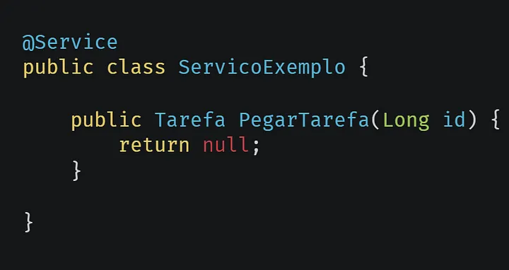
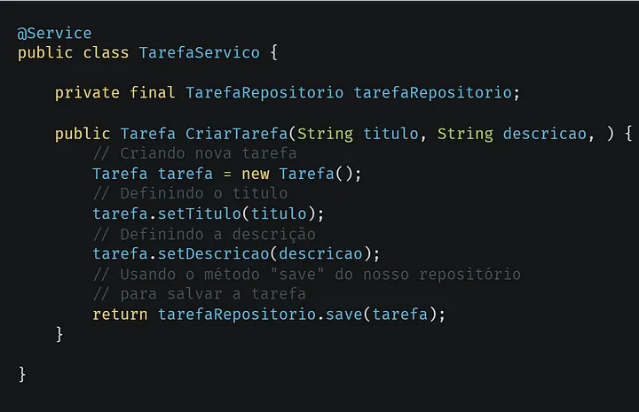

Criando uma API GraphQL com Java Spring Boot — Parte 6: Serviços
Neste artigo criaremos os serviços que gerenciará a nossa API e nosso banco de dados.

Exemplo de serviços no Spring Boot.
O que são serviços?
Serviço é uma camada responsável pela execução da lógica de negócio, ela sempre é chamada pelo controlador, e também é a camada que se comunica diretamente com a base de dados. Entretanto, podemos ter serviços que não são chamados pelo controlador, mas por outros serviços. Abaixo um exemplo de serviço.

Exemplo de serviço com Spring Boot.
Implementando nossos serviços
Antes de tudo iremos criar uma interface do nosso serviço e depois implementaremos ele. Primeiramente criaremos um serviço para gerar nosso tokens JWT.
Exemplo de interface do serviço de token.Exemplo de implementação do serviço de token.
Agora iremos criar os serviços de Usuário e Tarefas, e depois finalizaremos os nossos controladores.
Exemplo de interface do serviço de autenticação.Exemplo de implementação do serviço de autenticação.
Agora faremos o que gerencia tarefas.
Exemplo de interface do serviço de tarefas.Exemplo de implementação do serviço de tarefas.
Agora só precisamos finalizar nossos controladores.
Exemplo do controlador de autenticação usando o serviço.Exemplo do controlador de tarefas usando o serviço.
E terminamos por aqui, abaixo deixarei links relacionado ao assunto.